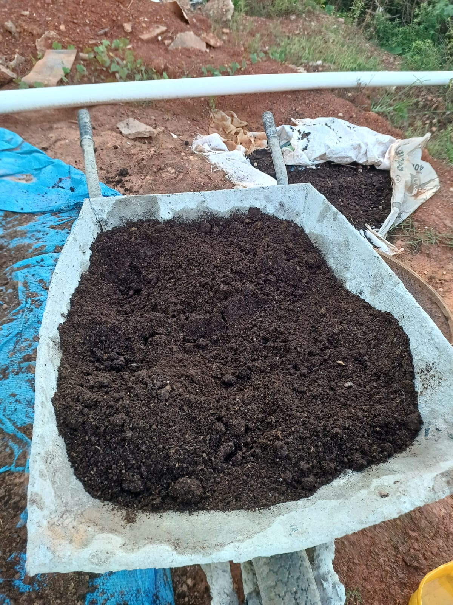
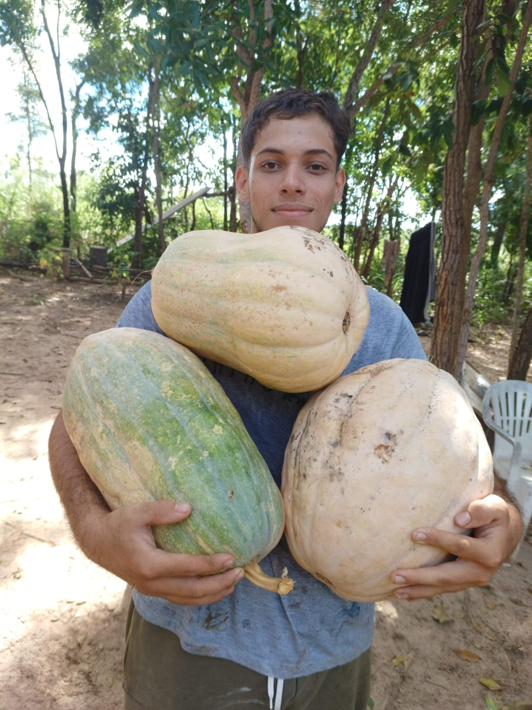
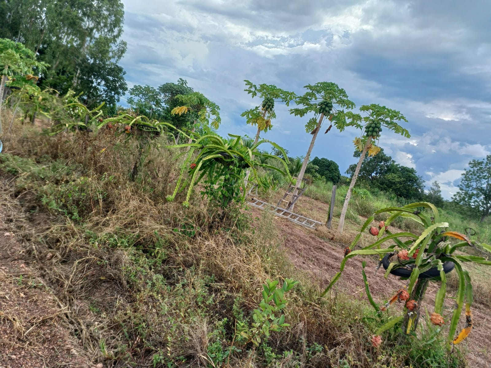
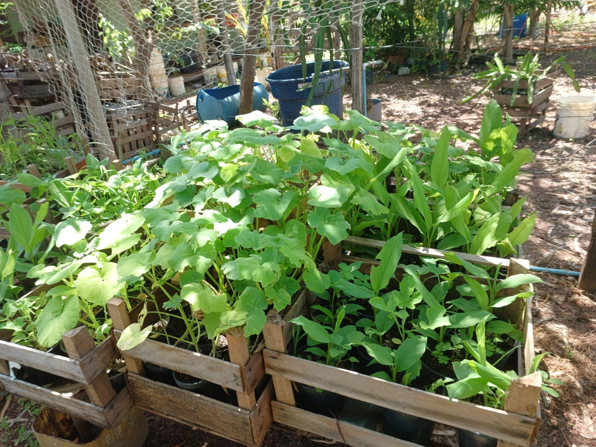

Mais frutos, de verdade
Fórmula com nutrientes que estimulam a frutificação — não apenas o crescimento das folhas.
O Esterco Turbinado Frutífera nutre suas plantas de forma natural e segura, com entrega em até 3 dias em Cuiabá e Várzea Grande.
Você já tentou de tudo. Comprou adubo na loja, seguiu dicas nas redes — e mesmo assim as plantas crescem, mas as frutas não aparecem.
Ou pior: usou um produto forte demais e a planta ficou queimada. Adubos químicos mal aplicados podem destruir em dias o que você levou meses para cultivar.
Cada mês sem resultado é tempo perdido e dinheiro que foi embora.
Folhas crescem, flores aparecem e somem. Os frutos nunca chegam.
Adubos industriais são agressivos. Uma dose errada pode matar raízes.
Prateleiras cheias de fórmulas para lavoura — não para seu jardim em casa.
100% orgânico, enriquecido com os nutrientes certos para estimular a frutificação — sem risco de queimar suas plantas.




De 1 kg a 100 kg. Você paga só pelo que precisa.
Entrega em até 3 dias em Cuiabá e Várzea Grande. Sem sair de casa.
Nutrição natural que trabalha no solo. Primeiros resultados em 3 a 6 semanas.
Fórmula com nutrientes que estimulam a frutificação — não apenas o crescimento das folhas.
Orgânico e equilibrado: não queima raiz, não mata o que você construiu com tempo e carinho.
Entregamos em Cuiabá e Várzea Grande. Sem sair de casa, sem esperar semanas.
A partir de R$ 9 — menos do que um vaso novo que vai ter o mesmo problema.
Formulação para quem cuida em casa — não para lavoura industrial de grande escala.
Sem agrotóxicos, sem resíduos químicos no solo da sua casa e da sua família.
Números e imagens reais de quem usa e colhe.
Depoimentos reais de quem usou e transformou o jardim.
[INSERIR DEPOIMENTO REAL AQUI — ex: "Meu limoeiro não dava fruto há 2 anos. Depois de um mês com o Frutífera, já apareceram mais de 20 limões!"]
[INSERIR DEPOIMENTO REAL AQUI — ex: "Usei no meu maracujazeiro e em 40 dias estava cheio de flores e frutos. Produto incrível!"]
[INSERIR DEPOIMENTO REAL AQUI — ex: "Entregaram em 2 dias, produto fresquinho. Minhas plantas nunca estiveram tão saudáveis!"]
Compartilhe sua experiência e ajude outras pessoas a transformarem o jardim delas.
Entre com sua conta Google para enviar um depoimento verificado.
Dois produtos, seis tamanhos, um objetivo: seu jardim cheio de vida e frutos.
O Turbinado Frutífera foi formulado para plantas que produzem frutos: limoeiros, mangueiras, maracujazeiros, tomateiros, pimenteiras e outras. Para ornamentais, a linha Comum atende melhor.
Os primeiros sinais aparecem entre 3 a 6 semanas após a aplicação correta. Cada planta tem seu ritmo, mas nossos clientes já relatam diferença visível no primeiro mês.
Sim. Por ser 100% orgânico, não contém agrotóxicos. Recomendamos aplicar e deixar o solo absorver antes de crianças e pets circularem na área.
O pedido é feito direto pelo WhatsApp — rápido e sem formulário. Pagamento via Pix, transferência ou dinheiro na entrega, combinado na conversa.
Sim, para Cuiabá e Várzea Grande. Pedidos confirmados até o meio-dia costumam sair no mesmo dia.
Pode sim. O produto vem com orientação de uso e nossa equipe tira dúvidas pelo WhatsApp antes, durante e depois da aplicação.
O Frutífera tem maior concentração de nutrientes para frutificação (fósforo e potássio). O Comum é ideal para crescimento e folhagem. Se quer colher frutos, o Frutífera é a escolha certa.
Mande uma mensagem agora — em minutos seu pedido já está encaminhado. Sem formulário, sem espera.
💬 Falar com Gabriel Gatti agora📞 (65) 99345-0411 · (65) 99623-9650
Mande uma mensagem agora — em menos de 1 minuto você já tem seu pedido encaminhado.
📧 Quer receber dicas de jardim e ofertas exclusivas?
🔒 Sem spam. Conforme a LGPD.